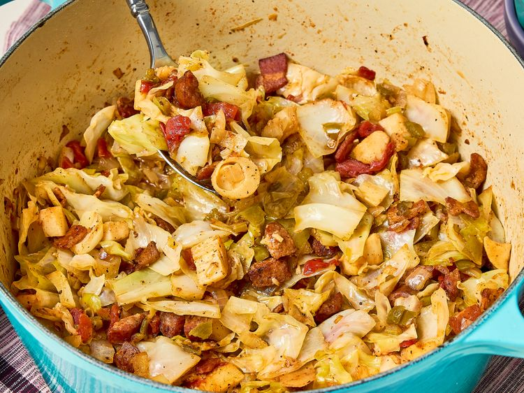

Swamp Cabbage

Description
This swamp cabbage is a hearty cabbage stew, savory, meaty, and tender.
Aromatic vegetables and meltingly tender cabbage combine with
the bright acidity of tomatoes and uniquely textured hearts of palm
for a flavorful dish that is sure to satisfy.
Ingredients
- 8 ounces thick-cut bacon, chopped
- 6 ounces hickory-smoked sausage, sliced into 1/2-inch-thick half moons
- 1 (2 pound) green cabbage, coarsely chopped
- 1 yellow onion, chopped
- 1 green bell pepper, chopped
- 2 stalks celery, chopped
- 1 (14.5 ounce) can diced tomatoes
- 1 (14 ounce) can hearts of palm, drained and roughly chopped
Steps
- Heat a large Dutch oven over medium-high heat.
Add bacon and cook, stirring occasionally,
until most of bacon starts to turn brown, about 8 minutes;
add sausage and continue cooking, stirring often,
until bacon and sausage are crisp, 2 to 3 minutes.
- Add onion, bell pepper, celery, and garlic; cook, stirring often,
until tender, about 5 minutes.
- Add cabbage, salt, onion powder, and black pepper;
cook, stirring often, until cabbage starts to wilt, 2 to 3 minutes.
Add diced tomatoes, hearts of palm, and broth; stir until evenly combined.
- Bring mixture to a simmer over medium heat; cover and cook,
stirring every few minutes, until cabbage is tender
and most of the liquid is absorbed, 15 to 20 minutes.
Home